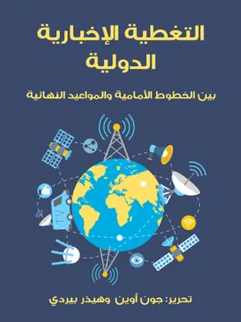

التغطية الإخبارية الدولية: بين الخطوط الأمامية والمواعيد النهائية

قراءة عربية أصلية محددة النطاق في الصفحات 26 إلى 31 من ملف PDF المرتبط، وليست تلخيصا كاملا للكتاب. نناقش ما تدعمه هذه المقاطع فقط.
خمسة عشر عامًا في المكان الخطأ والوقت الخطأ
تحكي المراسلة جانين دي جيوفاني كيف ساقتها خطاها إلى المكان الخطأ في الوقت الخطأ، قبيل قتل شخص، وأن عليها التراجع والاعتذار والفرار؛ لكن خمسة عشر عامًا من المهنة منحتها ثقة الناجين المفرطة. كانت تدرك ما سيحدث لو غادرت: الرجل المصاب المتشبث بكاحلها متوسلًا «أختي، ساعديني!» سيقتل ويرمى في قبر أو يترك مع البقر النافق حتى تتعفن جثته، وهو ما يحدث سريعًا في دول أفريقيا الاستوائية؛ لم تكن رأته من قبل لكنها كانت تعرف كيف ستبدو جثته بحلول الظهرية. فألحت في الجدال مخبرة الجندي باتفاقية جنيف وحقوق الإنسان والرحمة المسيحية، حتى جذبها صحفي آخر إلى سيارة الأجرة قائلًا: هذه أفريقيا، فيم تفكرين؟ وتعترف أن حظها، أو ما يسميه العرب «المكتوب»، هو ما أنهضها من فراشها في الرابعة فجرًا وساقها إلى سوق الماشية، وأن كثيرًا من زملائها قضوا وهم يخوضون مخاطرات أقل بكثير؛ منهم كورت شورك مراسل رويترز الذي شاركته الجمبري المشوي في فريتاون قبل الحادثة بعامين، وكانا قد حضرا قداس منتصف الليل في سراييفو المحاصرة واحتسيا شامبانيا السوق السوداء على وقع قذائف الهاون.
زاوية وحدود القراءة
قراءة موجزة من ص ٢٦ إلى ص ٣١ من أصل ٣٥٤ صفحة، تعرض فصل الشهادة على الأحداث لجانين دي جيوفاني، لا الكتاب كاملًا.
الطبعة والقراءة
هذه الترجمة العربية صادرة ومتاحة مجانًا بموجب اتفاق قانوني بين مؤسسة هنداوي وجون وايلي أند صنز، إنك. حقوق الترجمة محفوظة لمؤسسة هنداوي.
تنزيل PDF المجاني ↓ القراءة والمصدر الرسمي ↗